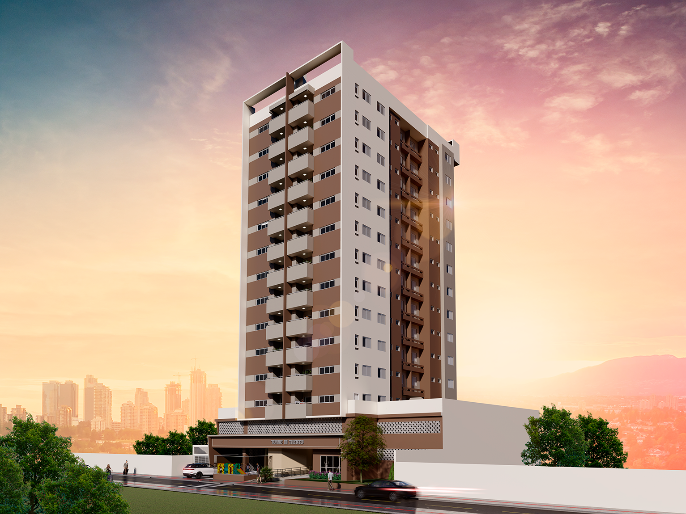
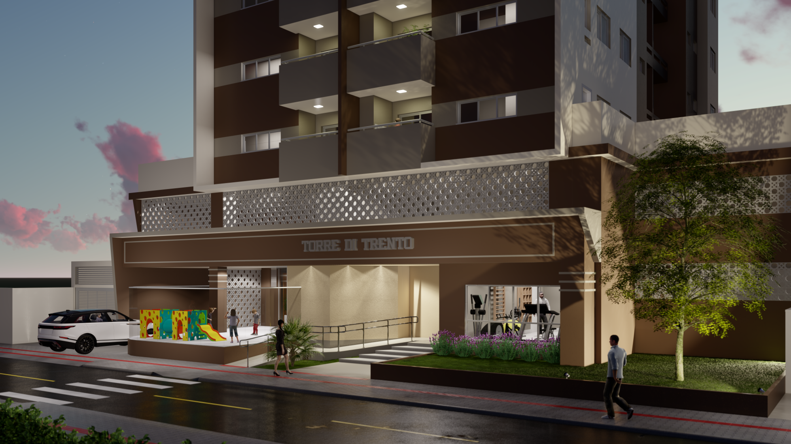
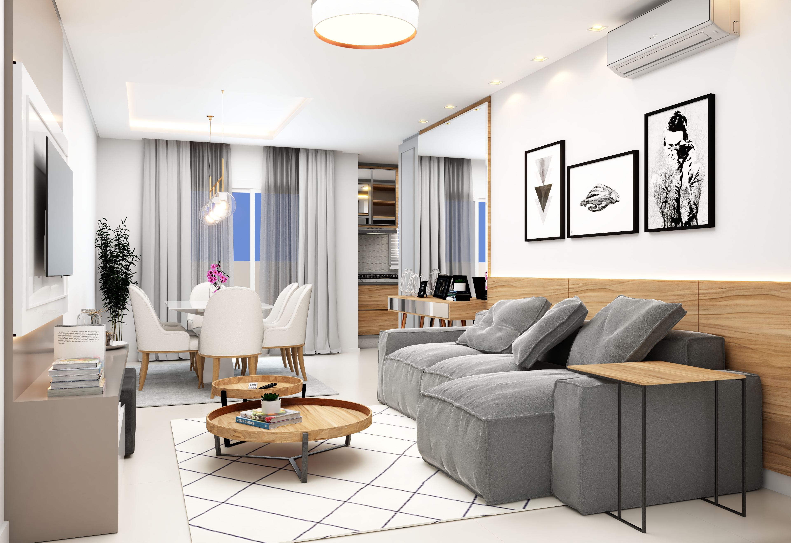
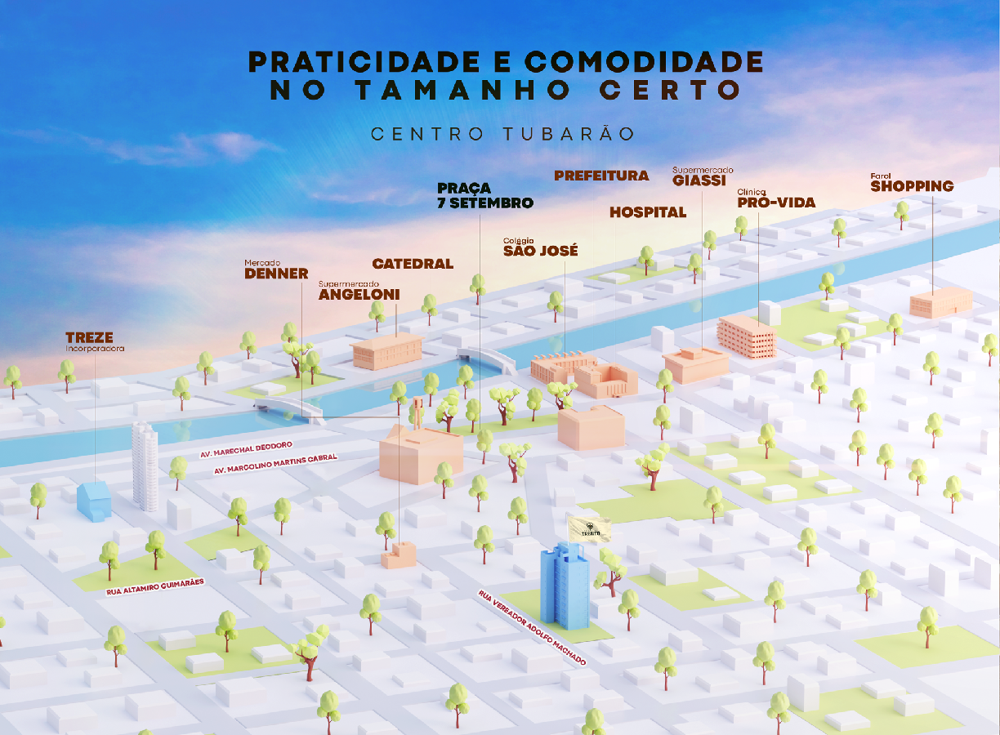

O ENDEREÇO MAIS DESEJADO DA CIDADE
A Vila Catarina está Pronta para Morar, só esperando por você. Imóveis Amplos e planejados de forma a
atender a quem procura leveza e aconchego.
Opção de apartamento de 2 ou 3 dormitórios, com suíte e opção de até 2 vagas de garagem por apartamento,
com área privativa de 76 à 89 m², no Centro da cidade e próximo ao que você procura. E mais: uma bela
vista panorâmica da cidade. Um belo empreendimento com área total de 5.410 m².




DETALHES DO PROJETO
Categoria: Entregue
Ano de Entrega: 2014
Localização: R. Osvaldo Cruz, 175 – Centro
Registro de Incorporação (RI): R.03/62.115 – 2° Ofício de Registro de Imóveis – Tubarão/SC
Área Privativa: 76 à 89 m²
CARACTERÍSTICAS:
Área Privativa: Living e cozinha integrados, sacada gourmet com churrasqueira
Cômodos: Aquecimento de agua a gás, possibilidade de 2 vagas de garagem e
tubulação automação residencial iluminação
Área Condomínio: Salão de festas, academia Climatizada e aproveitamento de água da chuva